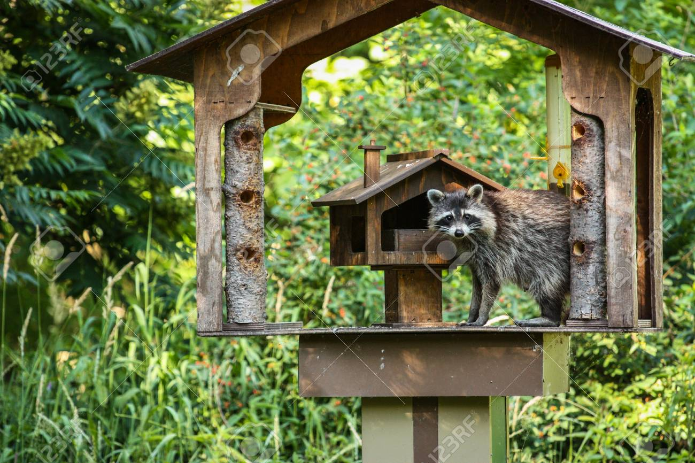
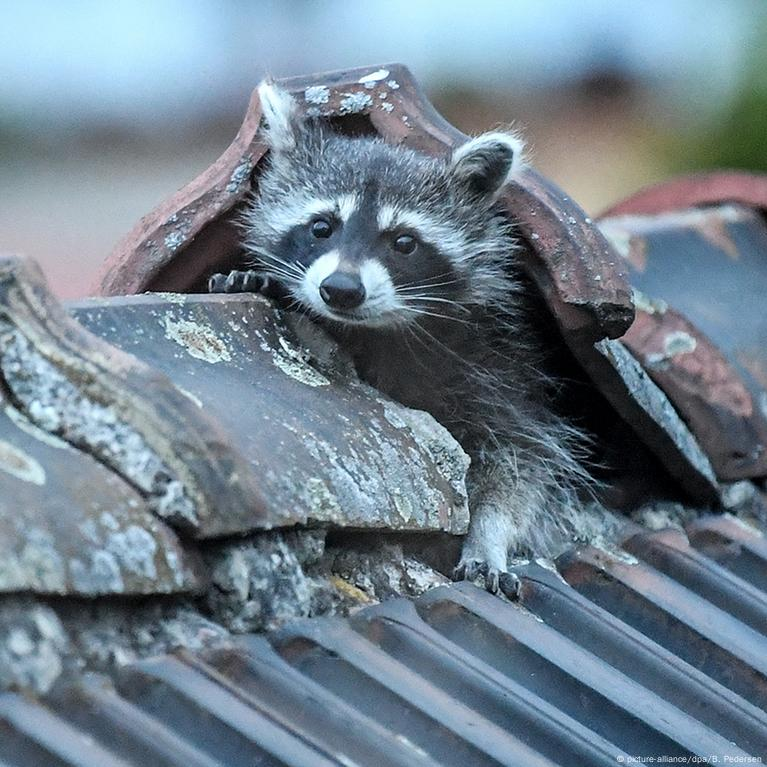

Hábitat-Zonas boscosas y Urbanas
Encontramos mapaches en un hábitat natural de zonas boscosas. Los mapaches silvestres propiamente dichos buscan la proximidad de corrientes de agua, a ser posible pequeños riachuelos, donde poder pescar cangrejos, ranas y otras pequeñas especies animales que atrapan con sus manos.
No presentan problemas de convivencia con algunos vecinos como podrían ser las mofetas y, si la necesidad de alimento lo justifica, pueden desplazarse a zonas realmente poco confortables, como puede ser una cueva llena de murciélagos en busca de comida.
Lo más normal es que estos mapaches no familiarizados con el ser humano duerman en las copas de los árboles o en madrigueras abandonadas por otros animales de tamaño similar. El descenso en su actividad que experimentan en los meses de invierno de las zonas más frías donde se distribuyen de manera natural, marca la tendencia por ocupar en esas etapas sitios resguardados. Pese a ello, los mapaches no hibernan.
Los mapaches que se han adaptado a los entornos urbanos pierden algunas de sus costumbres, como la de remojar los alimentos antes de comerlos, y desarrollan otras diferentes como la habilidad para cruzar carreteras y no ser atropellados.
En estos casos los mapaches prefieren aprovechar sótanos de viviendas o algún solar abandonado para asentarse, en lugar de los espacios más abiertos elegidos por sus hermanos forestales. La principal fuente de alimento de estos mapaches urbanitas son las sobras de comida del ser humano, porque lo que puede asegurarse que allí donde haya algo de comer, muy cerca habrá mapaches. Frecuentan los alrededores de las casas con puerta gatera para pequeños mamíferos.
Ubicación Geográfica
De manera natural, el mapache puede encontrarse desde Canadá hasta Centroamérica, con mayor densidad de población en la mitad sur de Canadá, en los Estados Unidos y en las zonas no desérticas de México, llegando incluso hasta Panamá. Pero lo cierto es que a raíz de la distribución de mapaches como mascotas a personas irresponsables que terminan abandonándolos, se pueden encontrar mapaches casi en cualquier parte del mundo a excepción de la Antártida. En Europa prosperan, en Rusia y empiezan a ser un problema en algunos puntos de especial interés ecológico de los países mediterráneos, donde la fauna autóctona no está preparada para convivir con un animal tan adaptable. En las regiones caucásicas la presencia de mapaches se debe a la cría de algunas especies que lograron escapar de granjas peleteras. Lo mismo ha sucedido en Alemania y los Países Bajos. Sobre la distrubución del mapache en el continente asiático no hay muchos datos, aunque sí se sabe que desde la década de los 70 algunos animales son importados como mascotas. En ese medio, donde los ejemplares liberados convivirían con sus parientes los tanuki o perros mapache, no parece que supongan un problema medioambiental tan grave.
